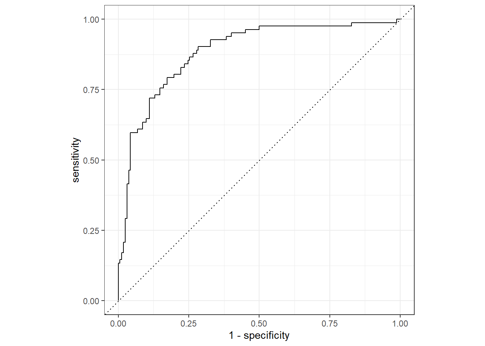

Primary Research Question
What are feature engineering tasks and steps to perform for each task?
Last updated: 2022-11-16
Checks: 7 0
Knit directory: Misean/
This reproducible R Markdown analysis was created with workflowr (version 1.7.0). The Checks tab describes the reproducibility checks that were applied when the results were created. The Past versions tab lists the development history.
Great! Since the R Markdown file has been committed to the Git repository, you know the exact version of the code that produced these results.
Great job! The global environment was empty. Objects defined in the global environment can affect the analysis in your R Markdown file in unknown ways. For reproduciblity it’s best to always run the code in an empty environment.
The command set.seed(20221115) was run prior to running
the code in the R Markdown file. Setting a seed ensures that any results
that rely on randomness, e.g. subsampling or permutations, are
reproducible.
Great job! Recording the operating system, R version, and package versions is critical for reproducibility.
Nice! There were no cached chunks for this analysis, so you can be confident that you successfully produced the results during this run.
Great job! Using relative paths to the files within your workflowr project makes it easier to run your code on other machines.
Great! You are using Git for version control. Tracking code development and connecting the code version to the results is critical for reproducibility.
The results in this page were generated with repository version 4fd7495. See the Past versions tab to see a history of the changes made to the R Markdown and HTML files.
Note that you need to be careful to ensure that all relevant files for
the analysis have been committed to Git prior to generating the results
(you can use wflow_publish or
wflow_git_commit). workflowr only checks the R Markdown
file, but you know if there are other scripts or data files that it
depends on. Below is the status of the Git repository when the results
were generated:
Ignored files:
Ignored: .Rhistory
Ignored: .Rproj.user/
Untracked files:
Untracked: analysis/images/check-code.png
Untracked: analysis/images/communicating.png
Untracked: analysis/images/corporate-finance-inst.png
Untracked: analysis/images/create-account.png
Untracked: analysis/images/lightning.png
Untracked: analysis/images/meetings.png
Untracked: analysis/images/schedule-meeting.png
Untracked: analysis/images/setting-up.png
Untracked: analysis/images/sign-in.jpg
Untracked: analysis/images/zoom-on-mobile.webp
Untracked: analysis/images/zoom.png
Untracked: data/employee_data.rds
Untracked: data/home_sales.rds
Untracked: data/leads_df.rds
Untracked: data/loan_df.rds
Untracked: data/power_df.csv
Untracked: data/telecom_df.rds
Untracked: data/trip.csv
Untracked: donation-tracking-excel-templates (2).zip
Untracked: donation-tracking-excel-templates/
Untracked: kickstarter.zip
Untracked: kickstarter/
Unstaged changes:
Modified: README.md
Modified: analysis/_site.yml
Note that any generated files, e.g. HTML, png, CSS, etc., are not included in this status report because it is ok for generated content to have uncommitted changes.
These are the previous versions of the repository in which changes were
made to the R Markdown (analysis/Data-Management.Rmd) and
HTML (docs/Data-Management.html) files. If you’ve
configured a remote Git repository (see ?wflow_git_remote),
click on the hyperlinks in the table below to view the files as they
were in that past version.
| File | Version | Author | Date | Message |
|---|---|---|---|---|
| html | 4fd7495 | JJCoen | 2022-11-16 | Build site. |
| Rmd | 3ec87e6 | JJCoen | 2022-11-16 | add Data Analysis and Training |
Feature engineering is accomplished with the recipes package. It is designed to help with all stages of feature engineering, which include
prep() function is used for
this task.bake() function from recipes is used for this task.What are feature engineering tasks and steps to perform for each task?
telecom_df <- readRDS("./data/telecom_df.rds")
str(telecom_df)tibble [975 × 9] (S3: tbl_df/tbl/data.frame)
$ canceled_service : Factor w/ 2 levels "yes","no": 1 1 2 1 2 2 1 2 1 2 ...
$ cellular_service : Factor w/ 2 levels "multiple_lines",..: 2 2 2 1 1 2 1 1 2 1 ...
$ avg_data_gb : num [1:975] 7.78 9.04 10.32 5.08 8.05 ...
$ avg_call_mins : num [1:975] 497 336 262 250 328 326 525 312 417 340 ...
$ avg_intl_mins : num [1:975] 127 88 55 107 122 114 97 147 96 136 ...
$ internet_service : Factor w/ 2 levels "fiber_optic",..: 1 1 1 2 2 1 1 1 2 1 ...
$ contract : Factor w/ 3 levels "month_to_month",..: 1 1 2 2 3 1 1 2 1 1 ...
$ months_with_company: num [1:975] 7 10 50 53 50 25 19 50 8 61 ...
$ monthly_charges : num [1:975] 76.5 94.9 103 60 75.2 ...# Create data split object
telecom_split <- initial_split(telecom_df, prop = 0.75,
strata = canceled_service)
# Create the training data
telecom_training <- telecom_split %>%
training()
# Create the test data
telecom_test <- telecom_split %>%
testing()
# Check the number of rows
nrow(telecom_training)[1] 731nrow(telecom_test)[1] 244The first step in feature engineering is to specify a
recipe object with the recipe() function and
add data pre-processing steps with one or more step_*()
functions. Storing all of this information in a single
recipe object makes it easier to manage complex feature
engineering pipelines and transform new data sources.
Use the R console to explore a recipe object named
telecom_rec, which was specified using the
telecom_training data
telecom_rec <- recipe(canceled_service ~ .,
data = telecom_df) %>%
step_log(avg_call_mins, base = 10)
telecom_recRecipe
Inputs:
role #variables
outcome 1
predictor 8
Operations:
Log transformation on avg_call_minssummary(telecom_rec)# A tibble: 9 × 4
variable type role source
<chr> <chr> <chr> <chr>
1 cellular_service nominal predictor original
2 avg_data_gb numeric predictor original
3 avg_call_mins numeric predictor original
4 avg_intl_mins numeric predictor original
5 internet_service nominal predictor original
6 contract nominal predictor original
7 months_with_company numeric predictor original
8 monthly_charges numeric predictor original
9 canceled_service nominal outcome originalIn the previous chapter, you fit a logistic regression model using a
subset of the predictor variables from the telecom_df data.
This dataset contains information on customers of a telecommunications
company and the goal is predict whether they will cancel their
service.
In this exercise, you will use the recipes package to
apply a log transformation to the avg_call_mins and
avg_intl_mins variables in the telecommunications data.
This will reduce the range of these variables and potentially make their
distributions more symmetric, which may increase the accuracy of your
logistic regression model.
# Specify feature engineering recipe
telecom_log_rec <- recipe(canceled_service ~.,
data = telecom_training) %>%
# Add log transformation step for numeric predictors
step_log(avg_call_mins, avg_intl_mins, base = 10)
# Print recipe object
telecom_log_recRecipe
Inputs:
role #variables
outcome 1
predictor 8
Operations:
Log transformation on avg_call_mins, avg_intl_mins# View variable roles and data types
telecom_log_rec %>%
summary()# A tibble: 9 × 4
variable type role source
<chr> <chr> <chr> <chr>
1 cellular_service nominal predictor original
2 avg_data_gb numeric predictor original
3 avg_call_mins numeric predictor original
4 avg_intl_mins numeric predictor original
5 internet_service nominal predictor original
6 contract nominal predictor original
7 months_with_company numeric predictor original
8 monthly_charges numeric predictor original
9 canceled_service nominal outcome originalIn the previous exercise, you created a recipe object
with instructions to apply a log transformation to the
avg_call_mins and avg_intl_mins predictor
variables in the telecommunications data.
The next step in the feature engineering process is to train your
recipe object using the training data. Then you will be
able to apply your trained recipe to both the training and
test datasets in order to prepare them for use in model fitting and
model evaluation.
# Train the telecom_log_rec object
telecom_log_rec_prep <- telecom_log_rec %>%
prep(training = telecom_training)
# View results
telecom_log_rec_prepRecipe
Inputs:
role #variables
outcome 1
predictor 8
Training data contained 731 data points and no missing data.
Operations:
Log transformation on avg_call_mins, avg_intl_mins [trained]# Use your trained recipe to obtain the transformed training dataset.
telecom_log_rec_prep %>%
bake(new_data = NULL)# A tibble: 731 × 9
cellular_se…¹ avg_d…² avg_c…³ avg_i…⁴ inter…⁵ contr…⁶ month…⁷ month…⁸ cance…⁹
<fct> <dbl> <dbl> <dbl> <fct> <fct> <dbl> <dbl> <fct>
1 single_line 10.3 2.42 1.74 fiber_… one_ye… 50 103. no
2 multiple_lin… 8.05 2.52 2.09 digital two_ye… 50 75.2 no
3 single_line 9.3 2.51 2.06 fiber_… month_… 25 95.7 no
4 multiple_lin… 9.96 2.53 2.13 fiber_… month_… 61 106. no
5 single_line 6.69 2.55 1.96 digital month_… 6 59.2 no
6 single_line 9.37 2.58 1.94 fiber_… month_… 4 94.9 no
7 multiple_lin… 4.11 2.57 1.81 digital two_ye… 72 55.3 no
8 multiple_lin… 10.6 2.45 2.17 fiber_… two_ye… 54 108 no
9 multiple_lin… 7.86 2.58 2.21 digital one_ye… 23 73.8 no
10 single_line 8.67 1.97 2.12 fiber_… two_ye… 55 88.8 no
# … with 721 more rows, and abbreviated variable names ¹cellular_service,
# ²avg_data_gb, ³avg_call_mins, ⁴avg_intl_mins, ⁵internet_service, ⁶contract,
# ⁷months_with_company, ⁸monthly_charges, ⁹canceled_serviceApply your trained recipe to the test dataset.
# Apply to test data
telecom_log_rec_prep %>%
bake(new_data = telecom_test)# A tibble: 244 × 9
cellular_se…¹ avg_d…² avg_c…³ avg_i…⁴ inter…⁵ contr…⁶ month…⁷ month…⁸ cance…⁹
<fct> <dbl> <dbl> <dbl> <fct> <fct> <dbl> <dbl> <fct>
1 multiple_lin… 8.01 2.72 1.99 fiber_… month_… 19 83.6 yes
2 multiple_lin… 9.4 2.49 2.17 fiber_… one_ye… 50 99.4 no
3 single_line 6.23 2.63 1.98 fiber_… month_… 33 68.2 yes
4 multiple_lin… 10.2 2.60 2.06 fiber_… month_… 17 92.7 no
5 multiple_lin… 5.17 2.53 2.08 digital month_… 6 49.0 no
6 multiple_lin… 11.8 2.54 2.10 fiber_… two_ye… 71 115. no
7 single_line 8.02 2.38 1.98 fiber_… month_… 9 88.4 no
8 multiple_lin… 11.0 2.49 2.12 fiber_… two_ye… 46 109. no
9 single_line 6.19 2.29 1.91 digital one_ye… 14 59.1 no
10 multiple_lin… 12.2 2.57 2.18 fiber_… two_ye… 35 113. no
# … with 234 more rows, and abbreviated variable names ¹cellular_service,
# ²avg_data_gb, ³avg_call_mins, ⁴avg_intl_mins, ⁵internet_service, ⁶contract,
# ⁷months_with_company, ⁸monthly_charges, ⁹canceled_serviceCorrelated predictor variables provide redundant information and can negatively impact the model fitting process. When two variables are highly correlated, their values change linearly with each other and hence provide the same information to your machine learning algorithms. This phenomenon is know as multicollinearity.
Before beginning the model fitting process, it’s important to explore your dataset to uncover these relationships and remove them in your feature engineering steps.
telecom_training %>%
# Select numeric columns
select_if(is.numeric) %>%
# Calculate correlation matrix
cor() avg_data_gb avg_call_mins avg_intl_mins months_with_company
avg_data_gb 1.000 0.13688 0.164 0.41026
avg_call_mins 0.137 1.00000 0.105 0.00396
avg_intl_mins 0.164 0.10544 1.000 0.22193
months_with_company 0.410 0.00396 0.222 1.00000
monthly_charges 0.954 0.13970 0.167 0.43636
monthly_charges
avg_data_gb 0.954
avg_call_mins 0.140
avg_intl_mins 0.167
months_with_company 0.436
monthly_charges 1.000Create a scatter plot with avg_data_gb on the x-axis and monthly_charges on the y-axis.
# Plot correlated predictors
ggplot(telecom_training, aes(x = avg_data_gb, y = monthly_charges)) +
# Add points
geom_point() +
# Add title
labs(title = "Monthly Charges vs. Average Data Usage",
y = 'Monthly Charges ($)', x = 'Average Data Usage (GB)') 
From the scatter plot, you can see that the more data customers use, the more they are charged every month. You will have to remove this redundant information with your feature engineering steps.
Another common task is centering and scaling numeric variables, known as normalization. For each numeric column, we subtract the mean and divide by the standard deviation. This transforms numeric variables to standard deviation units with a mean of 0 and standard deviation of 1. Interpreting normalized variable values is very intuitive. From the normalized total_time value, we see that spending 1,273 seconds on the website is 1-point-19 standard deviations greater than the average time spent by customers.
The power of the recipes package is that you can include
multiple pre-processing steps in a single recipe object.
These steps will be carried out in the order they are entered with the
step_*() functions.
telecom_norm_rec object using the
telecom_training dataset.# Specify a recipe object
telecom_norm_rec <- recipe(canceled_service ~ .,data=telecom_training) %>%
# Remove correlated variables
step_corr(all_numeric(), threshold = 0.8) %>%
# Normalize numeric predictors
step_normalize(all_numeric_predictors())
# Train the recipe
telecom_norm_rec_prep <- telecom_norm_rec %>%
prep(telecom_training)
# Apply to test data
telecom_norm_rec_prep %>%
bake(new_data = telecom_test)# A tibble: 244 × 8
cellular_service avg_data_gb avg_ca…¹ avg_i…² inter…³ contr…⁴ month…⁵ cance…⁶
<fct> <dbl> <dbl> <dbl> <fct> <fct> <dbl> <fct>
1 multiple_lines -0.135 2.38 -0.375 fiber_… month_… -0.614 yes
2 multiple_lines 0.594 -0.451 1.21 fiber_… one_ye… 0.616 no
3 single_line -1.07 1.10 -0.407 fiber_… month_… -0.0586 yes
4 multiple_lines 1.01 0.745 0.228 fiber_… month_… -0.694 no
5 multiple_lines -1.62 -0.0654 0.323 digital month_… -1.13 no
6 multiple_lines 1.83 -0.0388 0.545 fiber_… two_ye… 1.45 no
7 single_line -0.130 -1.41 -0.439 fiber_… month_… -1.01 no
8 multiple_lines 1.45 -0.477 0.768 fiber_… two_ye… 0.457 no
9 single_line -1.09 -2.03 -0.852 digital one_ye… -0.813 no
10 multiple_lines 2.08 0.307 1.31 fiber_… two_ye… 0.0207 no
# … with 234 more rows, and abbreviated variable names ¹avg_call_mins,
# ²avg_intl_mins, ³internet_service, ⁴contract, ⁵months_with_company,
# ⁶canceled_serviceIn the test set, the normalised value for avg_data_gb[1]
is 0.426. This is derived from the mean and standard deviation in the
training set:
\[ m_{data-gb} = 8.23 \\ s_{data-gb} = 1.9 \]
So, avg_data_gb[1] is 0.426 * 1.9 = 0.809. This means
that this customer uses an average of 809Mb greater than the average
amount of 8.23Gb.
setDT(telecom_training)
setDT(telecom_test)
data_gb1 <- telecom_test[1, avg_data_gb]
data_gb_m <- telecom_training[, mean(avg_data_gb)]
data_gb_sd <- telecom_training[, sd(avg_data_gb)]
(data_gb1 - data_gb_m)/data_gb_sd[1] -0.1350.426 * data_gb_sd + data_gb_m[1] 9.08data_gb_sd <- telecom_training[, sd(avg_data_gb)]Dummy variable encoding takes a different approach than one-hot encoding. It removes redundant information by excluding one value from the original set of data values. If we have n distinct values in our categorical data, we will get n - 1 indicator variables.

In the example above, zeros in marketing and technology mean that the department is finance.
Many modeling engines in R include automatic dummy variable creation, so it is possible to fit models without having to use step_dummy(). However, these methods are not consistent across engines in using one-hot versus dummy variables or naming conventions. Using the recipes package standardizes this process and will make your code less susceptible to errors.
The step_*() functions within a recipe are carried out
in sequential order. It’s important to keep this in mind so that you
avoid unexpected results in your feature engineering pipeline!
Specify the telecom_recipe_1 object to normalize all
numeric predictors and then create dummy variables for all nominal
predictors in the training data, telecom_training.
Select columns by role in your recipe
specification.
Train telecom_recipe_1 and use it to transform the
test data, telecom_test.
Now specify telecom_recipe_2 to create dummy
variables for all nominal predictors and then normalize all numeric
predictors in the training data, telecom_training.
Select columns by role in your recipe
specification.
telecom_recipe_1 <-
recipe(canceled_service ~ avg_data_gb + contract, data = telecom_training) %>%
# Normalize numeric predictors
step_normalize(all_numeric_predictors()) %>%
# Create dummy variables for nominal predictors
step_dummy(all_nominal(), -all_outcomes())
# Train and apply telecom_recipe_1 on the test data
telecom_recipe_1 %>%
prep(telecom_training) %>%
bake(new_data = telecom_test)# A tibble: 244 × 4
avg_data_gb canceled_service contract_one_year contract_two_year
<dbl> <fct> <dbl> <dbl>
1 -0.135 yes 0 0
2 0.594 no 1 0
3 -1.07 yes 0 0
4 1.01 no 0 0
5 -1.62 no 0 0
6 1.83 no 0 1
7 -0.130 no 0 0
8 1.45 no 0 1
9 -1.09 no 1 0
10 2.08 no 0 1
# … with 234 more rowstelecom_recipe_2 <-
recipe(canceled_service ~ avg_data_gb + contract, data = telecom_training) %>%
# Create dummy variables for nominal predictors
step_dummy(all_nominal(), -all_outcomes()) %>%
# Normalize numeric predictors
step_normalize(all_numeric_predictors())
# Train and apply telecom_recipe_2 on the test data
telecom_recipe_2 %>%
prep(telecom_training) %>%
bake(new_data = telecom_test)# A tibble: 244 × 4
avg_data_gb canceled_service contract_one_year contract_two_year
<dbl> <fct> <dbl> <dbl>
1 -0.135 yes -0.514 -0.471
2 0.594 no 1.94 -0.471
3 -1.07 yes -0.514 -0.471
4 1.01 no -0.514 -0.471
5 -1.62 no -0.514 -0.471
6 1.83 no -0.514 2.12
7 -0.130 no -0.514 -0.471
8 1.45 no -0.514 2.12
9 -1.09 no 1.94 -0.471
10 2.08 no -0.514 2.12
# … with 234 more rowsNotice that telecom_recipe_1 produced [0, 1] values
in the dummy variable columns while telecom_recipe_2
produced dummy variables which were then normalized!
The predictor contract_two_year created by
telecom_recipe_2 is -0.482 instead of 0 and 2.07 instead of
1 due to normalization.
For model interpretation, it’s best to normalize variables before creating dummy variables.
Also notice that since you only specified two predictor variables
in your model formula, the rest of the columns are ignored by your
recipe objects when transforming new data sources.
The recipes package is designed to encode multiple
feature engineering steps into one object, making it easier to maintain
data transformations in a machine learning workflow.
In this exercise, you will train a feature engineering pipeline to prepare the telecommunications data for modeling.
# Create a recipe that predicts canceled_service using the training data
telecom_recipe <- recipe(canceled_service ~ ., data=telecom_training) %>%
# Remove correlated predictors
step_corr(all_numeric_predictors(), threshold = 0.8) %>%
# Normalize numeric predictors
step_normalize(all_numeric_predictors()) %>%
# Create dummy variables
step_dummy(all_nominal(), -all_outcomes())
# Train your recipe and apply it to the test data
telecom_recipe %>%
prep(telecom_training) %>%
bake(new_data=telecom_test)# A tibble: 244 × 9
avg_data_gb avg_cal…¹ avg_i…² month…³ cance…⁴ cellu…⁵ inter…⁶ contr…⁷ contr…⁸
<dbl> <dbl> <dbl> <dbl> <fct> <dbl> <dbl> <dbl> <dbl>
1 -0.135 2.38 -0.375 -0.614 yes 0 0 0 0
2 0.594 -0.451 1.21 0.616 no 0 0 1 0
3 -1.07 1.10 -0.407 -0.0586 yes 1 0 0 0
4 1.01 0.745 0.228 -0.694 no 0 0 0 0
5 -1.62 -0.0654 0.323 -1.13 no 0 1 0 0
6 1.83 -0.0388 0.545 1.45 no 0 0 0 1
7 -0.130 -1.41 -0.439 -1.01 no 1 0 0 0
8 1.45 -0.477 0.768 0.457 no 0 0 0 1
9 -1.09 -2.03 -0.852 -0.813 no 1 1 1 0
10 2.08 0.307 1.31 0.0207 no 0 0 0 1
# … with 234 more rows, and abbreviated variable names ¹avg_call_mins,
# ²avg_intl_mins, ³months_with_company, ⁴canceled_service,
# ⁵cellular_service_single_line, ⁶internet_service_digital,
# ⁷contract_one_year, ⁸contract_two_yearTo incorporate feature engineering into the modeling process, the training and test datasets must be pre-processed before the model fitting stage. With the new skills you have learned in this chapter, you will be able to use all of the available predictor variables in the telecommunications data to train your logistic regression model.
In this exercise, you will create a feature engineering pipeline on the telecommunications data and use it to transform the training and test datasets.
telecom_recipe <- recipe(canceled_service ~., data = telecom_training) %>%
# Removed correlated predictors
step_corr(all_numeric_predictors(), threshold = 0.8) %>%
# Log transform numeric predictors
step_log(all_numeric_predictors(), base = 10) %>%
# Normalize numeric predictors
step_normalize(all_numeric_predictors()) %>%
# Create dummy variables
step_dummy(all_nominal(), -all_outcomes())
# Train recipe
telecom_recipe_prep <- telecom_recipe %>%
prep(telecom_training)
# Transform training data
telecom_training_prep <- telecom_recipe_prep %>%
bake(new_data = NULL)
# Transform test data
telecom_test_prep <- telecom_recipe_prep %>%
bake(new_data = telecom_test)
telecom_test_prep %>%
head() %>%
kbl() %>%
kable_styling()| avg_data_gb | avg_call_mins | avg_intl_mins | months_with_company | canceled_service | cellular_service_single_line | internet_service_digital | contract_one_year | contract_two_year |
|---|---|---|---|---|---|---|---|---|
| -0.007 | 1.848 | -0.211 | -0.032 | yes | 0 | 0 | 0 | 0 |
| 0.625 | -0.320 | 1.079 | 0.692 | no | 0 | 0 | 1 | 0 |
| -0.999 | 1.007 | -0.243 | 0.381 | yes | 1 | 0 | 0 | 0 |
| 0.943 | 0.736 | 0.344 | -0.116 | no | 0 | 0 | 0 | 0 |
| -1.735 | 0.051 | 0.423 | -0.895 | no | 0 | 1 | 0 | 0 |
| 1.505 | 0.075 | 0.601 | 0.955 | no | 0 | 0 | 0 | 1 |
You have pre-processed your training and test data-sets in the previous exercise. Since you incorporated feature engineering into your modeling workflow, you are able to use all of the predictor variables available in the telecommunications data!
The next step is training your logistic regression model and using it to obtain predictions on your new pre-processed test data-set.
# default for logistic_reg is engine = "glm",
# and mode = "classification"
logistic_model <- logistic_reg()
# Train logistic model
logistic_fit <- logistic_model %>%
fit(canceled_service ~ ., data = telecom_training_prep)
# Obtain class predictions
class_preds <- predict(logistic_fit, new_data = telecom_test_prep,
type = 'class')
# Obtain estimated probabilities
prob_preds <- predict(logistic_fit, new_data = telecom_test_prep,
type = 'prob')
# Combine test set results
telecom_results <- telecom_test_prep %>%
select(canceled_service) %>%
bind_cols(class_preds, prob_preds)
telecom_results# A tibble: 244 × 4
canceled_service .pred_class .pred_yes .pred_no
<fct> <fct> <dbl> <dbl>
1 yes yes 0.826 0.174
2 no no 0.0899 0.910
3 yes yes 0.516 0.484
4 no yes 0.613 0.387
5 no no 0.260 0.740
6 no no 0.0499 0.950
7 no no 0.271 0.729
8 no no 0.0397 0.960
9 no no 0.0262 0.974
10 no no 0.0709 0.929
# … with 234 more rowsIn this exercise, you will use yardstick metric
functions to evaluate your model’s performance on the test data-set.
When you fit a logistic regression model to the telecommunications
data in Chapter 2, you predicted canceled_service using
avg_call_mins, avg_intl_mins, and
monthly_charges. The sensitivity of your model was 0.42
while the specificity was 0.895.
Now that you have incorporated all available predictor variables using feature engineering, you can compare your new model’s performance to your previous results.
# Create a confusion matrix
telecom_results %>%
conf_mat(truth = canceled_service, estimate = .pred_class) Truth
Prediction yes no
yes 59 18
no 23 144# Calculate sensitivity
telecom_results %>%
sens(truth = canceled_service, estimate = .pred_class)# A tibble: 1 × 3
.metric .estimator .estimate
<chr> <chr> <dbl>
1 sens binary 0.720# Calculate specificity
telecom_results %>%
spec(truth = canceled_service, estimate = .pred_class)# A tibble: 1 × 3
.metric .estimator .estimate
<chr> <chr> <dbl>
1 spec binary 0.889# Plot ROC curve
telecom_results %>%
roc_curve(truth = canceled_service, .pred_yes) %>%
autoplot()
sessionInfo()R version 4.2.1 (2022-06-23 ucrt)
Platform: x86_64-w64-mingw32/x64 (64-bit)
Running under: Windows 10 x64 (build 22000)
Matrix products: default
locale:
[1] LC_COLLATE=English_United States.utf8
[2] LC_CTYPE=English_United States.utf8
[3] LC_MONETARY=English_United States.utf8
[4] LC_NUMERIC=C
[5] LC_TIME=English_United States.utf8
attached base packages:
[1] stats graphics grDevices utils datasets methods base
other attached packages:
[1] yardstick_1.0.0 workflowsets_0.2.1 workflows_0.2.6 tune_0.2.0
[5] rsample_1.0.0 parsnip_1.0.0 modeldata_0.1.1 infer_1.0.2
[9] dials_1.0.0 scales_1.2.1 broom_1.0.0 tidymodels_0.2.0
[13] forcats_0.5.1 stringr_1.4.1 purrr_0.3.5 readr_2.1.3
[17] tidyr_1.2.1 tibble_3.1.8 tidyverse_1.3.1 recipes_0.2.0
[21] caret_6.0-92 lattice_0.20-45 skimr_2.1.4 kableExtra_1.3.4
[25] data.table_1.14.2 visdat_0.5.3 ggplot2_3.3.6 dplyr_1.0.10
[29] workflowr_1.7.0
loaded via a namespace (and not attached):
[1] colorspace_2.0-3 ellipsis_0.3.2 class_7.3-20
[4] rprojroot_2.0.3 base64enc_0.1-3 fs_1.5.2
[7] rstudioapi_0.13 farver_2.1.1 furrr_0.3.0
[10] listenv_0.8.0 prodlim_2019.11.13 fansi_1.0.3
[13] lubridate_1.8.0 xml2_1.3.3 codetools_0.2-18
[16] splines_4.2.1 knitr_1.39 jsonlite_1.8.2
[19] pROC_1.18.0 dbplyr_2.2.1 compiler_4.2.1
[22] httr_1.4.3 backports_1.4.1 assertthat_0.2.1
[25] Matrix_1.4-1 fastmap_1.1.0 cli_3.3.0
[28] later_1.3.0 htmltools_0.5.2 tools_4.2.1
[31] gtable_0.3.1 glue_1.6.2 reshape2_1.4.4
[34] Rcpp_1.0.9 cellranger_1.1.0 jquerylib_0.1.4
[37] DiceDesign_1.9 vctrs_0.4.1 svglite_2.1.0
[40] nlme_3.1-157 iterators_1.0.14 timeDate_3043.102
[43] gower_1.0.0 xfun_0.31 globals_0.15.1
[46] ps_1.7.1 rvest_1.0.2 lifecycle_1.0.3
[49] future_1.26.1 getPass_0.2-2 MASS_7.3-57
[52] ipred_0.9-13 hms_1.1.2 promises_1.2.0.1
[55] parallel_4.2.1 yaml_2.3.5 sass_0.4.1
[58] rpart_4.1.16 stringi_1.7.8 highr_0.9
[61] foreach_1.5.2 lhs_1.1.5 hardhat_1.2.0
[64] lava_1.6.10 repr_1.1.4 rlang_1.0.6
[67] pkgconfig_2.0.3 systemfonts_1.0.4 evaluate_0.17
[70] labeling_0.4.2 processx_3.7.0 tidyselect_1.2.0
[73] parallelly_1.32.0 plyr_1.8.7 magrittr_2.0.3
[76] R6_2.5.1 generics_0.1.3 DBI_1.1.3
[79] pillar_1.8.1 haven_2.5.0 whisker_0.4
[82] withr_2.5.0 survival_3.3-1 nnet_7.3-17
[85] future.apply_1.9.0 modelr_0.1.8 crayon_1.5.2
[88] utf8_1.2.2 tzdb_0.3.0 rmarkdown_2.14
[91] grid_4.2.1 readxl_1.4.0 callr_3.7.2
[94] git2r_0.30.1 ModelMetrics_1.2.2.2 reprex_2.0.1
[97] digest_0.6.29 webshot_0.5.3 httpuv_1.6.5
[100] GPfit_1.0-8 stats4_4.2.1 munsell_0.5.0
[103] viridisLite_0.4.1 bslib_0.3.1